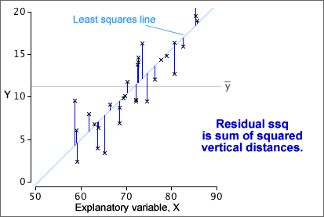

| The total sum of squares reflects the total variability of the response. |
Total variation
| The total sum of squares reflects the total variability of the response. |
The overall variance of all response values is the total sum of squares divided by (n - 1).

Explained variation (signal)
| The explained sum of squares is the variation that is explained by the model. |

Residual variation (noise)
| The residual sum of squares is the unexplained variation. |
Note that the pooled estimate of the error variance, σ2, is the sum of squares within groups divided by (n - 2).

Relationship between sums of squares
The following relationship requires some algebra to prove but is important.